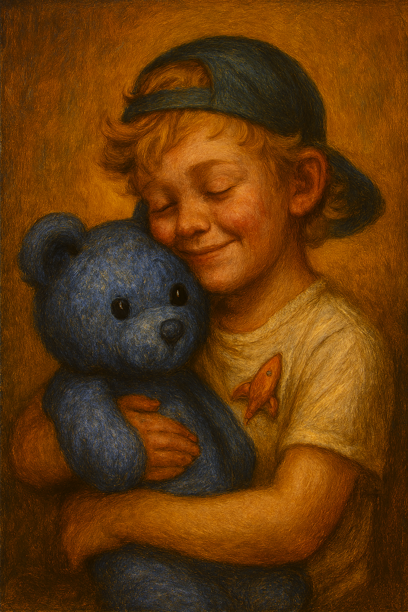

Tibbin the Blue Bear: Lukey Buke’s Nighttime Hero
Posted on November 6, 2025 · Category: TAOLB Universe Stories

At twelve years old, Lukey Buke still wears his backwards ball cap like a badge of honor. His blond curls peek out from underneath, and his rocketship pin clipped proudly to his favorite t-shirt reminds everyone he’s got big dreams. But there’s one thing most people don’t know about Lukey. Every night, before the stars come out, he hugs a soft blue teddy bear named Tibbin.
Tibbin isn’t just a stuffed animal. He’s a friend. A quiet guardian. A dream bringer.
The Night Tibbin Arrived
Lukey was eight when Tibbin came into his life. It was a chilly fall evening, and Lukey had just finished building a cardboard rocket in the living room. His mom handed him a small box wrapped in silver paper. Inside was Tibbin soft, blue, and smiling with stitched eyes that seemed to sparkle.
“He looks like he’s from space!” Lukey said, hugging Tibbin tight.
That night, something changed. Lukey fell asleep faster than usual, curled up with Tibbin under his arm. And for the first time in weeks, he didn’t wake up from bad dreams. Instead, he dreamed of flying through galaxies, meeting friendly aliens, and racing comets with rocket powered shoes.
Tibbin became part of the bedtime routine. Pillow, blanket, Tibbin. Every night. No exceptions.
Still Here, Still Loved
Now, at twelve, Lukey’s dreams are bigger but Tibbin is still there. A little worn, a little faded, but still blue and brave. Lukey doesn’t care if people think he’s too old for a teddy bear. Tibbin helped him sleep. Helped him dream. That kind of magic doesn’t fade.
And sometimes, when Lukey’s German Shepherd, Koda, curls up at the foot of the bed, Lukey smiles. Between Tibbin’s quiet comfort and Koda’s warm presence, the night feels safe. Like home.
Friends Forever
Tibbin may be small, but he’s stitched into Lukey’s story. Into every dream, every adventure, every quiet moment before sleep. And that rocketship pin? It’s not just for show. It’s a reminder that dreams like friendships can launch from the simplest places. Even from a blue teddy bear named Tibbin.